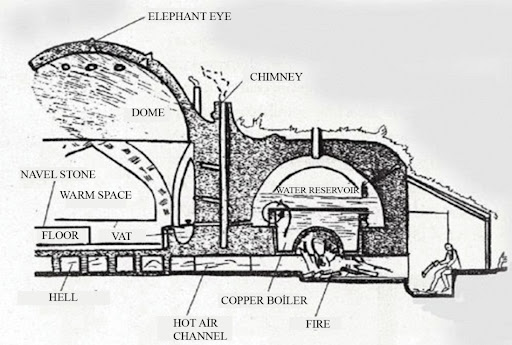

Fußbodenheizung
Eine faszinierende Innovation, die Sinan in seinen Bauwerken einsetzte,
war eine Art Fußbodenheizung
Die Technik der Fußbodenheizung in Mimar Sinans Bauten:
Sinan verwendete in seinen Bauwerken ein System, das auf einer alten
römischen Technik basiert, die als Hypokausten-Heizung bekannt ist.
Dieses System nutzte die Wärme von erhitzter Luft oder Wasser, um Räume, insbesondere Bäder, zu erwärmen.
Dabei flossen heiße Luft oder Dämpfe durch Hohlräume unter dem Boden und entlang der Wände, was den Boden und die Wände erwärmte.
Funktionsweise:
-
Feuerraum (Hypokaustum): Unter dem Boden wurde ein Feuer entfacht,
das Luft erwärmte.
-
Kanalsystem: Diese heiße Luft oder der Dampf wurde ein Netzwerk
von Kanälen unter dem Boden und den Wänden geleitet.
-
Wärmeverteilung: Die Wärme strömte durch die Kanäle und erwärmte den Boden
und die Wände gleichmäßig. Dies sorgte für eine angenehme Temperatur, besonders
in Bädern, wo gleichmäßige Wärme wichtig war.
Anwendungsbeispiele:
-
Hamams (Türkische Bäder): In vielen osmanischen Hamams, die von Sinan
gebaut wurden, wie z.B. im Süleymanie-Hamam in Istanbul, war dieses Heizsystem
von entscheidender Bedeutung. Der Warme Boden und die Wände sorgten für eine konstante
Temperatur, was für das traditionelle Dampfbad unerlässlich war.
-
Moscheen: In einigen Moscheen nutzte Sinan ähnliche Techniken, um die großen
Gebetshallen angenehm warm zu halten, besonders während der kalten Wintermonate.
Hier eine Abbildung vom Heizsystem im Querschnitt.
